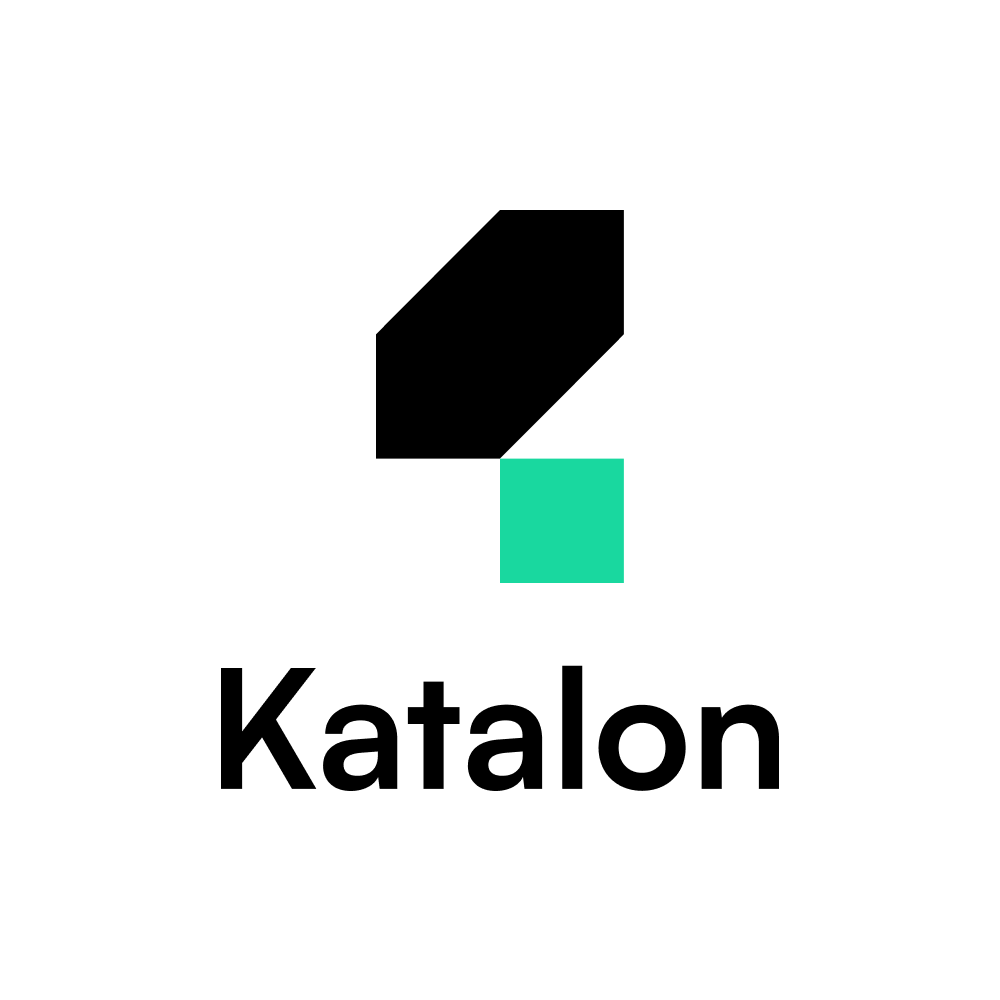

What I Have
Skills & Interests
Technical Skills
-
 Cypress
Cypress
-  Katalon Studio
-
 Postman API
Postman API
- SQL
-
 GitHub
GitHub
-
 Microsoft Excel
Microsoft Excel
-
 Javascript
Javascript
Interests
- Quality Assurance Automation
- Quality Assurance Manual Testing
- Quality Assurance Engineer
Languages
- English
- Bahasa Indonesia